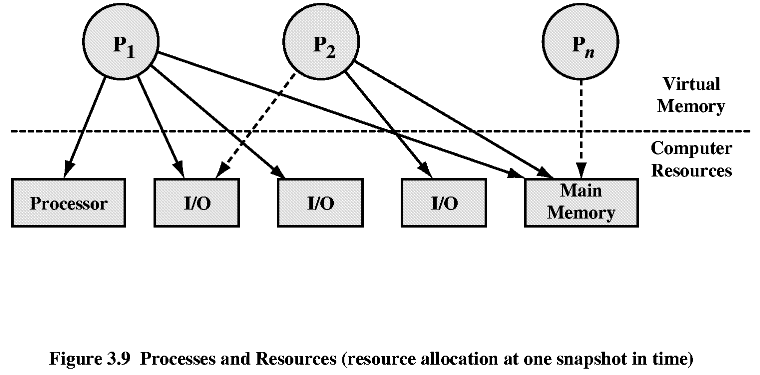

Операционни системи
3 (3). Описание и управление на процеси
* ОС трябва да организира изпълнението на няколко процеса (multiprogramming),
за да максимизира използването на процесора, докато осигурява разумно време
за отговор (multiuser).
* ОС трябва да разпределя ресурси на процесите в съответствие със специфичните
им изисквания и приоритети, като в същото време избягва "мъртва хватка".
* ОС поддържа връзките между процесите и създаването на процеси от
потребителите.
3.1 Състояния на процеси
Процесорът изпълнява машинни инструкции, съхраняващи
се в ОП. Списъкът на инструкциите на един процес се нарича следа на процеса.
Пример:


** Модел с 2 състояния:
-- изпълнение (running);
-- неизпълнение (nonrunning).
 ** Създаване на процеси.
** Създаване на процеси.
Причини за създаване на процес:
- ново пакетно задание (new batch job) - с команди на ОС;
- диалогов login - потребител влиза в системата;
- създаден от ОС за осигуряване на услуга - във връзка с потребителска
програма, без да чака потребителят;
- породен от съществуващ процес (parent and child processes).
** Унищожаване на процеси.
Причини за унищожаване на процес:
- нормално завършване;
- превишаване на максималната време;
- няма памет;
- нарушаване на границите на паметта;
- грешка от защита;
- аритметична грешка;
- превишаване на времето за чакане на събитие;
- входно-изходна грешка;
- невалидна инструкция;
- инструкция, изпълнявана само от ОС;
- неправилна работа с данни;
- намеса на оператор или ОС;
- завършване на родителски процес;
- по заявка на родителски процес.
** Модел с 5 състояния.
Състоянията са:
1. Running - изпълнение;
2. Ready - готов;
3. Blocked- блокиран (чака събитие);
4. New - нов;
5. Exit - прекратен;
Преходи между различните състояния:


** Преустановени процеси (suspended processes).
Необходимостта от размяна (swapping).
Нови състояния на процесите:
3. Blocked, suspend
4. Ready, suspend
Преходи между различните състояния:
Обобщени характеристики на преустановени процеси:
1. Процесът не е готов за непосредствено изпълнение.
2. Независимост от блокировка.
3. Поставяне в това състояние с цел недопускане до изпълнение.
4. Смяна на това състояние става само с "нарочна заповед".
Причини за преустановяване на процес:
- размяна;
- друга причина за ОС;
- диалогово искане на потребителя;
- по време, ако се изпълнява периодично;
- искане на родителя.
3.2 Описание на процеси

** Структури на ОС за управление на процеси.
-- таблици на паметта за:
ОП - оперативна памет (main memory)
ВП - виртуална памет (virtual
memory)
-- I/O таблици;
-- таблици за файлове;
-- таблици на процеси.
** Структури за управление на процеси
-- разполагане на процесите (process location).
Типични елементи на изображение на процеса (process image):
User Data
User Program
System Stack
Process Control Block (PCB)
-- атрибути на процесите.
Типични елементи на контролния блок на процес (PCB):

3.3 Управление на процеси
** Режими на изпълнение (modes of execution).
Функции на ядрото:
- организация на процесите;
- организация на паметта;
- органицация на входа и изхода;
- поддържащи функции.
** Създаване на процеси.
Дейности на ОС за създаване на процес:
1. Създаване на идентификатор на процеса и
записването му в таблицата на процесите (primary process table).
2. Отделяне на памет за процеса.
3. Инициализация на контролния блок.
4. Създаване на необходимите връзки.
5. Други структури от данни.
** Превключване на процеси.
-- Кога ? - прекъсване на часовника; - I/O прекъсване; - недостатъчно
памет;
-- Превключване на режими: ядро-потребител;
-- Промяна на състоянията на процесите.
Действия на ОС при превключване на процеси:
1. Запазване на контекста на процеса, който
ще се прекъсва.
2. Обновяване на PCB.
3. Преместване на PCB в съответната опашка.
4. Избиране на друг процес за изпълнение.
5. Обновяване на PCB на избрания процес.
6. Обновяване на паметта с новите данни.
7. Възстановяване на състоянието на процесора
във вида при предишното прекъсване на процеса.
** Изпълнение на ОС:
-- ядро, което не е процес;
-- изпълнение в потребителски процеси;
-- базирана на процеси ОС.